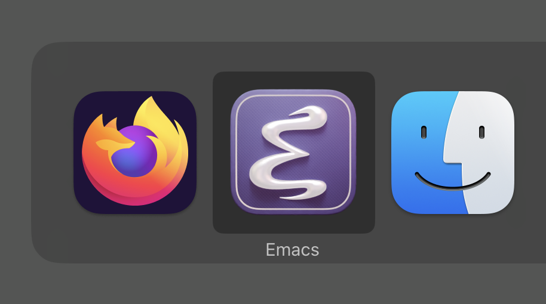
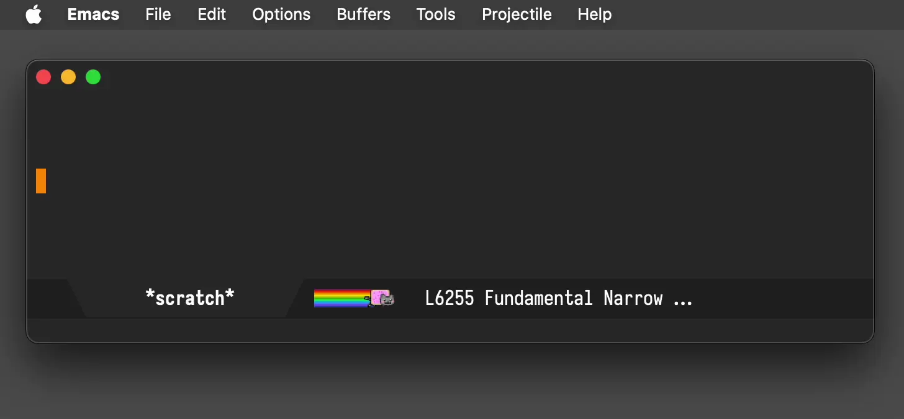
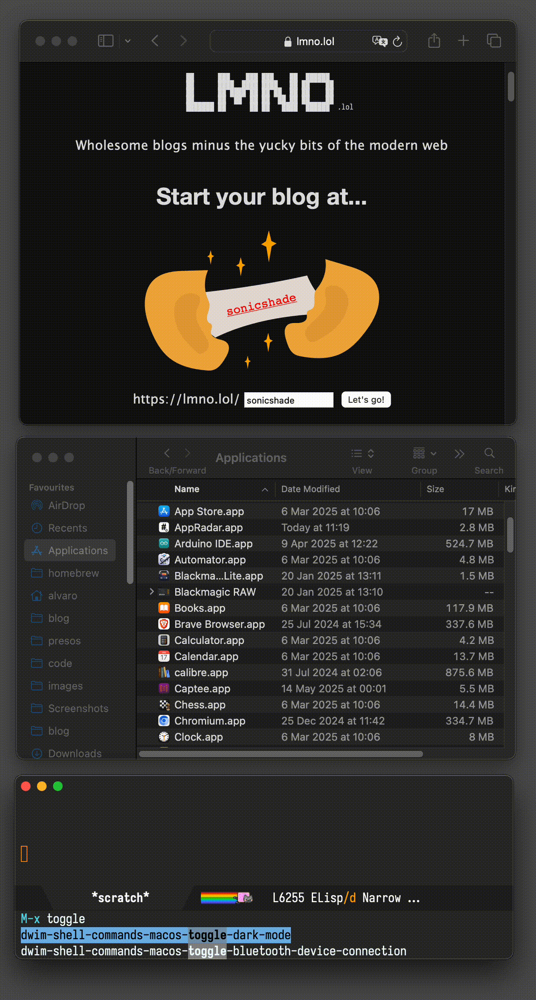
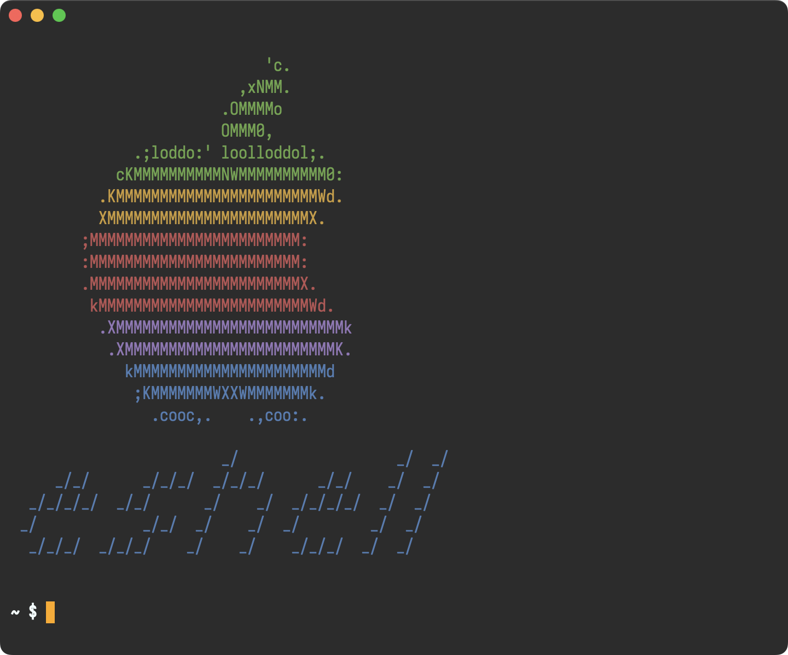
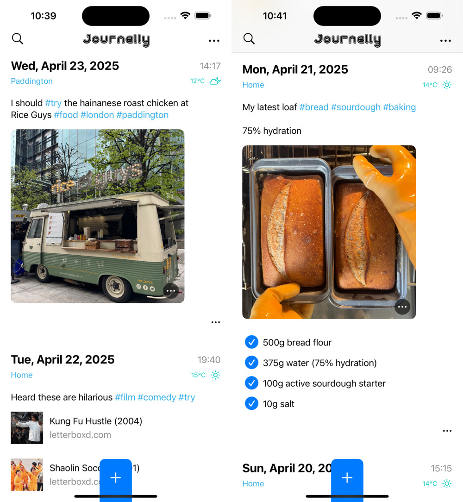
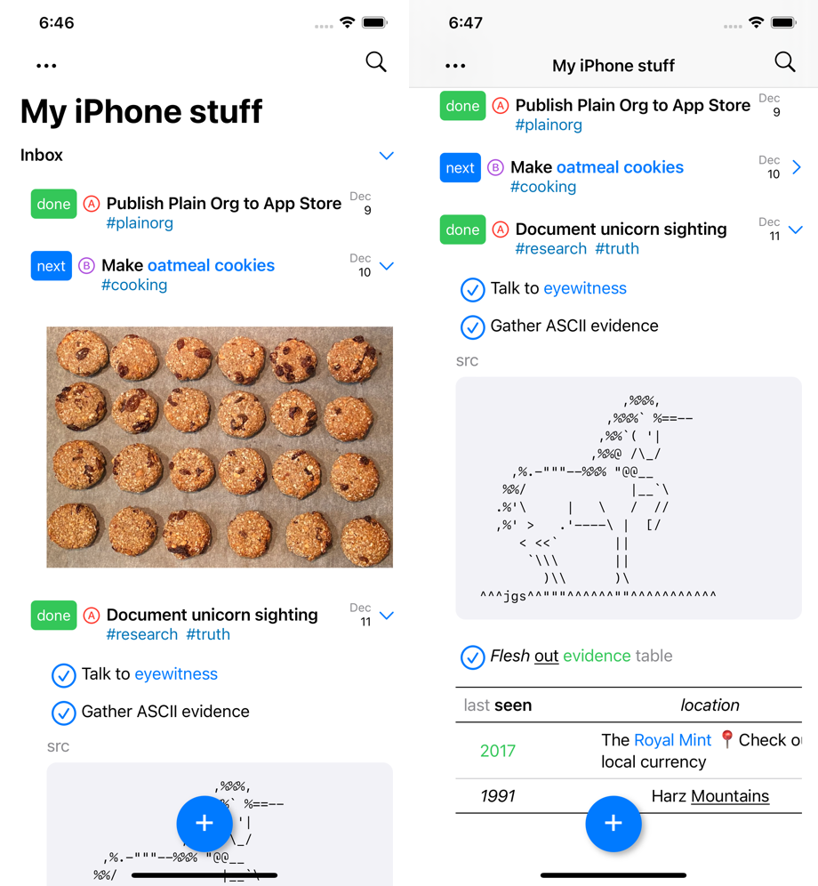

Álvaro Ramírez
Awesome Emacs on macOS
While GNU/Linux had been my operating system of choice for many years, these days I'm primarily on macOS. Lucky for me, I spend most of my time in Emacs itself (or a web browser), making the switch between operating systems a relatively painless task.
I build iOS and macOS apps for a living, so naturally I've accumulated a handful of macOS-Emacs integrations and tweaks over time. Below are some of my favorites.
Emacs Plus
For starters, I should mention I run Emacs on macOS via the excellent Emacs Plus homebrew recipe. These are the options I use:
brew install emacs-plus@30 --with-no-frame-refocus --with-native-comp --with-savchenkovaleriy-big-sur-curvy-3d-icon
Valeriy Savchenko's icons
Valeriy Savchenko has created some wonderful macOS Emacs icons. These days, I use his curvy 3D rendered icon, which I get via Emacs Plus's --with-savchenkovaleriy-big-sur-curvy-3d-icon option.

Modifiers
It's been a long while since I've settled on using macOS's Command (⌘) as my Emacs Meta key. For that, you need:
(setq mac-command-modifier 'meta)
At the same time, I've disabled the ⌥ key to avoid inadvertent surprises.
(setq mac-option-modifier 'none)
Enabling Control-Meta(⌘)-D
After setting ⌘ as Meta key, I discovered C-M-d is not available to Emacs for binding keys. There's a little workaround:
defaults write com.apple.symbolichotkeys AppleSymbolicHotKeys -dict-add 70 '<dict><key>enabled</key><false/></dict>'
Frames
You may have noticed the --with-no-frame-refocus Emacs Plus option. I didn't like Emacs refocusing other frames when closing one, so I sent a tiny patch over to Emacs Plus, which gave us that option.
I also prefer reusing existing frames whenever possible.
(setq ns-pop-up-frames nil)
Visual tweaks
Most of my visual tweaks have been documented in my Emacs eye candy post. For macOS-specific things, read on…
It's been a while since I've added this, though vaguely remember needing it to fix mode line rendering artifacts.
(setq ns-use-srgb-colorspace nil)
I like using a transparent title bar and these two settings gave me just that:
(add-to-list 'default-frame-alist '(ns-transparent-titlebar . t)) (add-to-list 'default-frame-alist '(ns-appearance . dark))
I want a menu bar like other macOS apps, so I enable with:
(use-package menu-bar :config (menu-bar-mode +1))

Emoji picker (a freebie!)
If you got a more recent Apple keyboard, you can press the 🌐 key to insert emojis from anywhere, including Emacs. If you haven't got this key, you can always M-x ns-do-show-character-palette, which launches the very same dialog.
Longing long press for accents?
If you prefer Apple's long-press approach to inserting accents or other special characters, I got an Emacs version of that.

Rotate macOS display
I wanted to rotate my monitor from the comfort of M-x, so I made Emacs do it.
Open with
While there are different flavors of "open with default macOS app" commands out there (ie. crux-open-with as part of Bozhidar Batsov's crux), I wanted one that let me choose a specific macOS app.

SF Symbols (for work)
Apple offers SF Symbols on all their platforms, so why not enable Emacs to insert and render them?
This is particulary handy if you do any sort of iOS/macOS development, enabling you to insert SF Symbols using your favorite completion framework. I happen to remain a faithful ivy user.

SF Symbols (for fun)
Speaking of enabling SF Symbol rendering, you can also use them to spiff your Emacs up. Check out Charles Choi's Calle 24 for a great-looking Emacs toolbar. Also, Christian Tietze shows how to use SF Symbols as Emacs tab numbers.
Quick kill
While macOS's Activity Monitor does a fine job killing processes, I wanted something a little speedier, so I went with a killing solution leveraging Emacs completions.

SwiftUI a la org babel
Having learned how simple it was to enable Objective-C babel support, I figured I could do something a little more creative with SwiftUI, so I published ob-swiftui on MELPA.

Changing macOS default apps
I found the nifty duti command-line tool to change default macOS applications super handy, but could never remember its name when I needed it. And so I decided to bring it into dwim-shell-command as part of my toolbox.

I got a bunch of handy helpers in dwim-shell-commands.el (specially all the image/video helpers via ffmpeg and imagemagick). Go check dwim-shell-commands.el. There's loads in there, but here are my macOS-specific commands:
- dwim-shell-commands-macos-add-to-photos
- dwim-shell-commands-macos-bin-plist-to-xml
- dwim-shell-commands-macos-caffeinate
- dwim-shell-commands-macos-convert-to-mp4
- dwim-shell-commands-macos-empty-trash
- dwim-shell-commands-macos-install-iphone-device-ipa
- dwim-shell-commands-macos-make-finder-alias
- dwim-shell-commands-macos-ocr-text-from-desktop-region
- dwim-shell-commands-macos-ocr-text-from-image
- dwim-shell-commands-macos-open-with
- dwim-shell-commands-macos-open-with-firefox
- dwim-shell-commands-macos-open-with-safari
- dwim-shell-commands-macos-reveal-in-finder
- dwim-shell-commands-macos-screenshot-window
- dwim-shell-commands-macos-set-default-app
- dwim-shell-commands-macos-share
- dwim-shell-commands-macos-start-recording-window
- dwim-shell-commands-macos-abort-recording-window
- dwim-shell-commands-macos-end-recording-window
- dwim-shell-commands-macos-toggle-bluetooth-device-connection
- dwim-shell-commands-macos-toggle-dark-mode
- dwim-shell-commands-macos-toggle-display-rotation
- dwim-shell-commands-macos-toggle-menu-bar-autohide
- dwim-shell-commands-macos-version-and-hardware-overview-info
Toggle dark mode
Continuing on the dwim-shell-commands family, I should also mention dwim-shell-commands-macos-toggle-dark-mode.
While I hardly ever change my Emacs theme, I do toggle macOS dark mode from time to time to test macOS or web development.

Menu bar auto hide
One last dwim-shell-command… One that showcases toggling the macOS menu bar (autohide).

Connect to your Bluetooth speaker
While this didn't quite stick for me, it was a fun experiment to add Emacs into the mix.

Eshell
This is just a little fun banner I see whenever I launch eshell.

This is all you need:
(use-package em-banner :custom (eshell-banner-message " \x1b[32m 'c. \x1b[0m \x1b[32m ,xNMM. \x1b[0m \x1b[32m .OMMMMo \x1b[0m \x1b[32m OMMM0, \x1b[0m \x1b[32m .;loddo:' loolloddol;. \x1b[0m \x1b[32m cKMMMMMMMMMMNWMMMMMMMMMM0: \x1b[0m \x1b[33m .KMMMMMMMMMMMMMMMMMMMMMMMWd. \x1b[0m \x1b[33m XMMMMMMMMMMMMMMMMMMMMMMMX. \x1b[0m \x1b[31m ;MMMMMMMMMMMMMMMMMMMMMMMM: \x1b[0m \x1b[31m :MMMMMMMMMMMMMMMMMMMMMMMM: \x1b[0m \x1b[31m .MMMMMMMMMMMMMMMMMMMMMMMMX. \x1b[0m \x1b[31m kMMMMMMMMMMMMMMMMMMMMMMMMWd. \x1b[0m \x1b[35m .XMMMMMMMMMMMMMMMMMMMMMMMMMMk \x1b[0m \x1b[35m .XMMMMMMMMMMMMMMMMMMMMMMMMK. \x1b[0m \x1b[34m kMMMMMMMMMMMMMMMMMMMMMMd \x1b[0m \x1b[34m ;KMMMMMMMWXXWMMMMMMMk. \x1b[0m \x1b[34m .cooc,. .,coo:. \x1b[0m \x1b[34m _/ _/ _/ \x1b[0m \x1b[34m _/_/ _/_/_/ _/_/_/ _/_/ _/ _/ \x1b[0m \x1b[34m _/_/_/_/ _/_/ _/ _/ _/_/_/_/ _/ _/ \x1b[0m \x1b[34m _/ _/_/ _/ _/ _/ _/ _/ \x1b[0m \x1b[34m _/_/_/ _/_/_/ _/ _/ _/_/_/ _/ _/ \x1b[0m "))
Screencasts
I wanted a quick way to record or take screenshots of macOS windows, so I now have my lazy way, leveraging macosrec, a recording command line utility I built. Invoked via M-x of course.
Eglot (LSP) for iOS/macOS dev
If you want any sort of code completion for your macOS projects, you'd be happy to know that eglot works out of the box.
(use-package eglot :ensure t :hook (swift-mode . eglot-ensure) :config (message "warning: `jsonrpc--log-event' is ignored.") (fset #'jsonrpc--log-event #'ignore) (add-to-list 'eglot-server-programs '(swift-mode . ("/Applications/Xcode.app/Contents/Developer/Toolchains/XcodeDefault.xctoolchain/usr/bin/sourcekit-lsp"))))
Search and play (Music app)
This is another experiment that didn't quite stick, but I played with controlling the Music app's playback.

While I still purchase music via Apple's Music app, I now play directly from Emacs via Ready Player Mode. I'm fairly happy with this setup, having scratched that itch with my own package.

By the way, those buttons also leverage SF Symbols on macOS.
Reveal -> all <- in Finder
While there are plenty of solutions out there leveraging the open command line tool to reveal files in macOS's Finder, I wanted one that revealed multiple files in one go. For that, I leveraged the awesome emacs-swift-module, also by Valeriy Savchenko.

Build your own macOS utils
While elisp wasn't in my top languages to learn back in the day, I sure am glad I finally bit the bullet and learned a thing or two. This opened many possibilities. I now see Emacs as a platform to build utilities and tools off of. A canvas of sorts, to be leveraged in and out of the editor.
For example, you could build your own bookmark launcher and invoke from anywhere on macOS.

Emacs as default email composer
Turns out you can also make Emacs your default email composer.
Emacs key bindings everywhere
While not exactly an Emacs tweak itself, I wanted to extend Emacs bindings into other macOS apps. In particular, I wanted more reliable Ctrl-n/p usage everywhere, which I achieved via Karabiner-Elements. I also mapped C-g to Esc, which really feels just great! I can now cancel things, dismiss menus, dialogs, etc. everywhere.
Org as lingua franca
With my Emacs usage growing over time, it was a matter of time until I discovered org mode. This blog is well over 11 years old now, yet still powered by the very same org file (beware, this file is big).
With my org usage growing, I felt like I was missing org support outside of Emacs. And so I started building iOS apps revolving around my Emacs usage.
Journelly (iOS)
Journelly is my latest iOS app, centered around note-taking and journaling. The app feels like tweeting, but for your eyes only of course. It's powered by org markup, which can be synced with Emacs via iCloud.


Flat Habits (iOS)
Org habits are handy for tracking daily habits. However, it wasn't super practical for me as I often wanted to check things off while on the go (away from Emacs). That led me to build Flat Habits.


Scratch (iOS)

Plain Org (iOS)
For more involved writing, nothing beats Emacs org mode. But what if I want quick access to my org files while on the go? Plain Org is my iOS solution for that.

Found this post useful?
I'll keep looking for other macOS-related tips and update this post in the future.
In the meantime, consider ✨sponsoring✨ this content, my Emacs packages, buying my apps, or just taking care of your eyes ;)